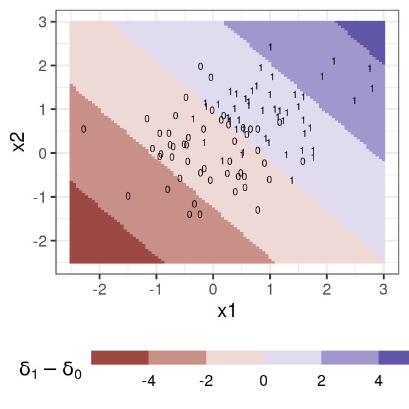
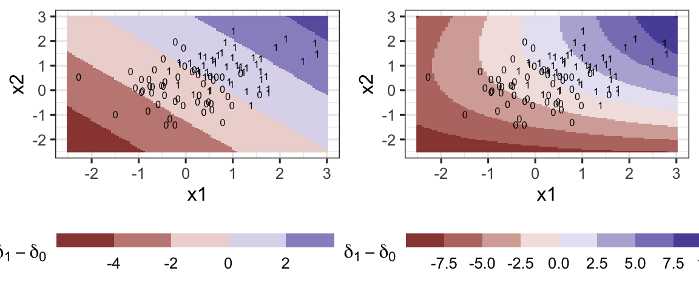

Stat 406
Geoff Pleiss, Trevor Campbell
Last modified – 14 October 2024
\[ \DeclareMathOperator*{\argmin}{argmin} \DeclareMathOperator*{\argmax}{argmax} \DeclareMathOperator*{\minimize}{minimize} \DeclareMathOperator*{\maximize}{maximize} \DeclareMathOperator*{\find}{find} \DeclareMathOperator{\st}{subject\,\,to} \newcommand{\E}{E} \newcommand{\Expect}[1]{\E\left[ #1 \right]} \newcommand{\Var}[1]{\mathrm{Var}\left[ #1 \right]} \newcommand{\Cov}[2]{\mathrm{Cov}\left[#1,\ #2\right]} \newcommand{\given}{\ \vert\ } \newcommand{\X}{\mathbf{X}} \newcommand{\x}{\mathbf{x}} \newcommand{\y}{\mathbf{y}} \newcommand{\P}{\mathcal{P}} \newcommand{\R}{\mathbb{R}} \newcommand{\norm}[1]{\left\lVert #1 \right\rVert} \newcommand{\snorm}[1]{\lVert #1 \rVert} \newcommand{\tr}[1]{\mbox{tr}(#1)} \newcommand{\brt}{\widehat{\beta}^R_{s}} \newcommand{\brl}{\widehat{\beta}^R_{\lambda}} \newcommand{\bls}{\widehat{\beta}_{ols}} \newcommand{\blt}{\widehat{\beta}^L_{s}} \newcommand{\bll}{\widehat{\beta}^L_{\lambda}} \newcommand{\U}{\mathbf{U}} \newcommand{\D}{\mathbf{D}} \newcommand{\V}{\mathbf{V}} \]
We showed that with two classes, the Bayes’ classifier is
\[g_*(x) = \begin{cases} 1 & \textrm{ if } \frac{p_1(x)}{p_0(x)} > \frac{1-\pi}{\pi} \\ 0 & \textrm{ otherwise} \end{cases}\]
where \(p_1(x) = \Pr(X=x \given Y=1)\), \(p_0(x) = \Pr(X=x \given Y=0)\) and \(\pi = \Pr(Y=1)\)
For more than two classes:
\[g_*(x) = \argmax_k \frac{\pi_k p_k(x)}{\sum_k \pi_k p_k(x)}\]
where \(p_k(x) = \Pr(X=x \given Y=k)\) and \(\pi_k = P(Y=k)\)
Let’s make some assumptions:
This leads to Linear Discriminant Analysis (LDA), one of the oldest classifiers
Assume just \(K = 2\) so \(k \in \{0,\ 1\}\)
We predict \(\widehat{y} = 1\) if
\[\widehat{p_1}(x) / \widehat{p_0}(x) > \widehat{\pi_0} / \widehat{\pi_1}\]
Plug in the density estimates:
\[\widehat{p_k}(x) = N(x - \widehat{\mu}_k,\ \widehat\Sigma)\]
Now we take \(\log\) and simplify \((K=2)\):
\[ \begin{aligned} &\Rightarrow \log(\widehat{p_1}(x)\times\widehat{\pi_1}) - \log(\widehat{p_0}(x)\times\widehat{\pi_0}) = \cdots = \cdots\\ &= \underbrace{\left(x^\top\widehat\Sigma^{-1}\overline X_1-\frac{1}{2}\overline X_1^\top \widehat\Sigma^{-1}\overline X_1 + \log \widehat\pi_1\right)}_{\delta_1(x)} - \underbrace{\left(x^\top\widehat\Sigma^{-1}\overline X_0-\frac{1}{2}\overline X_0^\top \widehat\Sigma^{-1}\overline X_0 + \log \widehat\pi_0\right)}_{\delta_0(x)}\\ &= \delta_1(x) - \delta_0(x) \end{aligned} \]
If \(\delta_1(x) > \delta_0(x)\), we set \(\widehat g(x)=1\)
gg <- ggplot(tib, aes(x, y)) +
geom_point(colour = blue) +
stat_function(fun = ~ 6 * (1 - pi) * dnorm(.x, mu0, sigma), colour = orange) +
stat_function(fun = ~ 6 * pi * dnorm(.x, mu1, sigma), colour = orange) +
annotate("label",
x = c(-3, 4.5), y = c(.5, 2 / 3),
label = c("(1-pi)*p[0](x)", "pi*p[1](x)"), parse = TRUE
)
ggLook closely at the equation for \(\delta_1(x)\):
\[\delta_1(x)=x^\top\widehat\Sigma^{-1}\overline X_1-\frac{1}{2}\overline X_1^\top \widehat\Sigma^{-1}\overline X_1 + \log \widehat\pi_1\]
We can write this as \(\delta_1(x) = x^\top a_1 + b_1\) with \(a_1 = \widehat\Sigma^{-1}\overline X_1\) and \(b_1=-\frac{1}{2}\overline X_1^\top \widehat\Sigma^{-1}\overline X_1 + \log \widehat\pi_1\).
We can do the same for \(\delta_0(x)\) (in terms of \(a_0\) and \(b_0\))
Therefore,
\[\delta_1(x)-\delta_0(x) = x^\top(a_1-a_0) + (b_1-b_0)\]
This is how we discriminate between the classes.
We just calculate \((a_1 - a_0)\) (a vector in \(\R^p\)), and \(b_1 - b_0\) (a scalar)
library(mvtnorm)
library(MASS)
generate_lda_2d <- function(
n, p = c(.5, .5),
mu = matrix(c(0, 0, 1, 1), 2),
Sigma = diag(2)) {
X <- rmvnorm(n, sigma = Sigma)
tibble(
y = which(rmultinom(n, 1, p) == 1, TRUE)[,1],
x1 = X[, 1] + mu[1, y],
x2 = X[, 2] + mu[2, y]
)
}
dat1 <- generate_lda_2d(100, Sigma = .5 * diag(2))
lda_fit <- lda(y ~ ., dat1)
Just like LDA, but \(\Sigma_k\) is separate for each class.
Produces Quadratic decision boundary.
Everything else is the same.
It is hard (maybe impossible) to come up with reasonable classifiers that are linear smoothers. Many “look” like a linear smoother, but then apply a nonlinear transformation.
Assume that \(\Pr(X=x | Y = k) = \Pr(X_1=x_1 | Y = k)\cdots \Pr(X_p=x_p | Y = k)\).
That is, conditional on the class, the feature distribution is independent.
If we further assume that \(\Pr(X_j=x_j | Y = k)\) is Gaussian,
This is the same as QDA but with \(\Sigma_k\) Diagonal.
Don’t have to assume Gaussian. Could do lots of stuff.
Another linear classifier and transformations
UBC Stat 406 - 2024